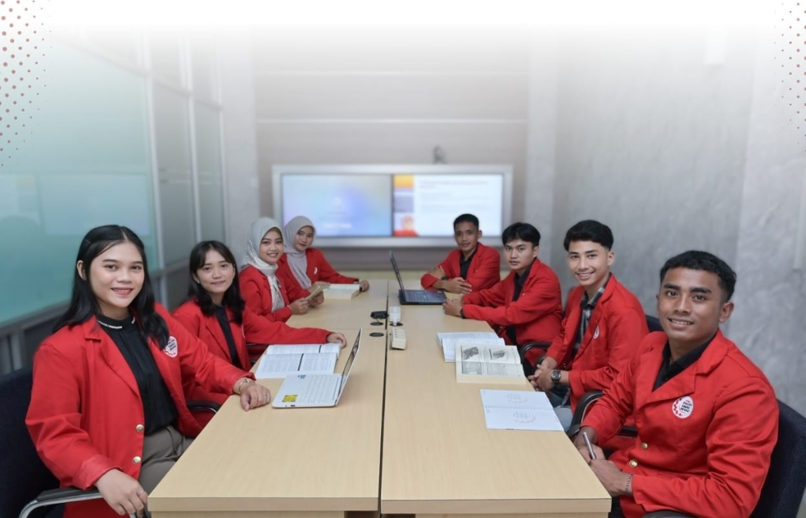

PANEL PENGELOLAAN PERPUSTAKAAN
Ruang Kendali Perpustakaan
Kelola koleksi, keanggotaan, sirkulasi, dan layanan perpustakaan melalui menu di sebelah kiri.

Kelola koleksi, keanggotaan, sirkulasi, dan layanan perpustakaan melalui menu di sebelah kiri.
